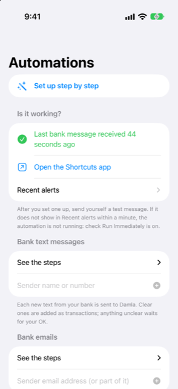

Guide › Automatic capture
Bank texts and emails
Send each bank message to Damla with a Shortcut.
A Shortcut automation passes each new text or email from your bank to Damla as it arrives, so purchases, refunds and income are recorded for you. You connect one bank at a time. Damla shows you the exact steps, and you make the automation once in the Shortcuts app.

When to use it
- Your bank sends a text every time you spend, get paid or top up on a card or account.
- Your bank also sends transaction alerts by email, and you want those recorded too.
- You want fewer payments typed in by hand.
- You want a record of what was sent to Damla and what it did with each message.
The actions Damla offers in Shortcuts
Damla's four actions appear in the Shortcuts app when you add a new action:
- Add to Damla — has a Text field and a Source field (Text message, Email or Wallet payment).
- Add statement to Damla — takes a statement PDF or a screenshot and queues it for review.
- Add card payment to Damla — takes a merchant, an amount and a card (see Apple Pay and Wallet payments).
- How much can I spend — answers with your safe-to-spend estimate, worked out by the forecast code.
The Automations screen in Damla lists these same names. In the Shortcuts app, tap Add Action, then Apps, then Damla to find them. If one is missing there, open Damla, force-quit the Shortcuts app and open it again. If it is still missing, restart the iPhone.
Step by step
First tell Damla who your bank is, then make the automation.
- Open Damla, then Settings, then Bank messages and statements, then Automations (Shortcuts).
- In the section "Bank text messages" (or "Bank emails"), type your bank's sender name or number and tap Add. For an email, part of the sender's email address is enough.
- Tap your bank's entry in the list to see the exact steps. Use the Copy buttons if it helps: one copies the steps, one a prompt for the Shortcuts app's Apple Intelligence, and one your bank's sender name, so nothing is mistyped.
- Follow the steps in the Shortcuts app: tap Automation, then the plus button, then choose Message (or Email).
- Under Sender, choose your bank. Leave Message Contains empty.
- Choose Run Immediately, then Next.
- Choose New Blank Automation, tap Add Action, search for Add to Damla and pick it.
- Set its Text to Shortcut Input, so the message itself is passed on.
- Set Source to Text message (or Email, so Damla knows where it came from).
- Tap Done. Switch Notify When Run off if it appears.
What happens to each message
- A clear purchase, refund or income whose card or account digits match one of your accounts is added as a transaction at once.
- An unclear message, an unknown card, an instalment conversion or a statement notice waits in the Inbox for one tap. Nothing that creates a commitment is added without your confirmation.
- A bill announcement becomes an expected bill, not a transaction.
- One-time codes are ignored and never stored, even if the phone is locked.
- The same alert delivered twice is added once.
Good to know
- Send yourself a test message after setting an automation up. On the Automations screen, the Is it working? section shows when the last bank message arrived, and Recent alerts lists recent alerts, each with what was done and why. If nothing shows within a minute, check that the automation is set to Run Immediately.
- A locked phone cannot open the books. Damla keeps the text and adds it the next time you unlock the app.
- The wording in the Shortcuts app may differ slightly from these steps on your iPhone's software version. The names Add to Damla, Text and Source are the ones to look for.
- Adverts, limit or rate notices and reminders from your bank are skipped on their own; see What Damla ignores, and undoing an alert.
Related
Something unclear or missing? Write to support@raveniq.ai and say which page.